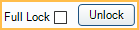

Payment Plan
Payment Plans, formerly called Dynamic Payment Plans, are patient repayment agreements.
In the Account Module Payment Plans grid, they show with the Type DPP.

- The grid can also include Old Payment Plan, Installment Plan and Insurance Payment Plans.
- If production on a Payment Plan has been overcharged, the plan turns yellow. Run the Payment Plans Overcharged Report to find any overcharged production.
- Payment Plans are only functional with an Insurance Payment Plan for the same procedures if set up correctly. See Setting up a Payment Plan in Conjunction with an Insurance Payment Plan at the bottom of this page.
- The Open Dental Service is required to use Payment Plans. This service updates plans as needed daily. To set a time for Payment Plans to update, see Preferences, Pay Plan run time.
- Automatic changes to Payment Plans caused by insurance estimate changes, procedure adjustments, etc. are not tracked in the Audit Trail. We suggest saving a copy (e.g., a printout or PDF) of the original Payment Plan for reference. If a Definitions: Image Categories is assigned for Payment Plans usage, signed payment plans are automatically saved to the Imaging Module.
To create a new Payment Plan, in the Account Module, click Payment Plan, Payment Plan.

Alternatively, double-click an existing Payment Plan to edit.
Related Links:
 See our Payment Plans Webinar or QuickTip: Payment Plans.
See our Payment Plans Webinar or QuickTip: Payment Plans. - Payment to a Payment Plan
- Payment Plans Report
- Payment Plan Q and A
Payment Plans can be open-ended or fully locked once created. See General Setup at the bottom of this page for instructions.
Category / Patient / Guarantor

Category: Assign a category to the Payment Plan (e.g., Ortho, Implant). Useful to distinguish one Payment Plan from another when families have many plans. Customize the category options in Definitions: Payment Plan Categories.
Patient: The person who was treated. Click Go To to switch to their account. Patients can have multiple Payment Plans, and each plan can have a different guarantor.
Guarantor: The person who makes the payments. Click Go To to switch to the guarantor's account. Click Change to choose a different guarantor for the Payment Plan.
- When creating a new Payment Plan, the guarantor defaults to the family guarantor.
- The guarantor can differ from the family guarantor and does not have to be in the patient's family.
- If the Payment Plan guarantor is not in the same family as the patient, PayPlan Charge Due line items are posted to the guarantor's account instead of the patient's.
Lock Options
Permanent Lock: Check to permanently lock the current terms of the plan.
- Prevents further changes to Pay Plan Production (e.g., adding procedures and adjustments or changing the production Amount Override) or Terms.
- Plans that are locked cannot be edited. A new plan must be created instead.
- If the preference, Require full lock to save a Payment Plan if there is an APR entered, is enabled, Permanent Lock must be checked when the plan has APR.
Unlock: Option is available when opening an existing plan and Permanent Lock is unchecked. Click to unlock the Terms section in order to make edits.
Terms

Date of Agreement: Defaults to today's date. Can be changed to a past date. If the Allow future dated transactions preference is enabled, can also be changed to a future date.
Total Principal Amount: The total amount of the Payment Plan, excluding interest. Calculated based on the attached production.
Date of First Payment: Set the date of the patient's first payment is due. Used to determine the Amortization Schedule.
- Defaults to one month from today's date. Can be changed to any date.
- Used for the first periodic charge in the Amortization Schedule if there is no Down Payment amount or if the current date or a future date is entered.
Down Payment: The amount the patient is paying upfront, before periodic charges.
- When the Date of First Payment is a past date, the Down Payment is due on the Date of First Payment.
- If the Date of First Payment is the current date or a future date, the Down Payment is due immediately (today).
- The full Down Payment amount is due, regardless of the Handle Treatment Planned setting.
APR: The percentage of interest to charge on the principal balance of completed procedures. If entered, additional options are available to delay interest charges. Enter only one. If both fields are left blank, interest is applied to all Charges Due.
- No interest for the first [ ] payments: The number of payments before interest is applied.
- Interest start date: The date of the first interest charge.
Interest is automatically calculated using the following method:
- Subtracts the Down Payment from the Payment Plan balance.
- Calculates the number of payments, or the payment amount, based on the new balance (balance minus Down Payment).
The Amortization Schedule can be based on a total number of payments or a specific payment amount. Enter only one.
- Payment Amount: Enter the payment amount. Number of payments are calculated automatically.
- Number of Payments: Enter the number of payments. Payment amount calculates automatically.
Charge Frequency: Select the frequency of which periodic charges are applied to the Payment Plan. The options below are calculated based off the Date of First Payment.
- Weekly: Charges are scheduled for the same day of the week as the Date of First Payment and occur every week (e.g., if the Date of First Payment falls on a Tuesday, subsequent charges are scheduled for each Tuesday).
- Every other week: Charges are scheduled for the same day of the week as the Date of First Payment and occur other every week (e.g., if the Date of First Payment falls on a Tuesday, subsequent charges are scheduled for every other Tuesday).
- Specific day of the month: Charges are scheduled to occur on the same week day and week number as the Date of First Payment (e.g., if the Date of First Payment falls on the second Tuesday of the month, subsequent charges are also scheduled for the second Tuesday of each month).
- If the charge would fall on the fifth or sixth week of the month, it is instead scheduled for the same week day on the fourth week of a month (e.g., if the Date of First Payment was set for the fifth Tuesday in July, charges are actually scheduled for the fourth Tuesday of each month).
- Monthly: Charge dates are scheduled to occur on the same date as the Date of First Payment each month.
- If the day of the month from the Date of First Payment doesn't exist in a month, then the charge is scheduled for the closest available day in the month (e.g., if the Date of First Payment is January 31, for the month of April the charge is scheduled for the 30th).
- Quarterly: Charges are scheduled to occur on the same date as the Date of First Payment every three months.
- If the date of the month from the Date of First Payment doesn't exist in a month a quarterly payment is due, then the charge is scheduled for the closest available date in the month (e.g., if the Date of First Payment is January 31, for the month of April the charge is scheduled for the 30th).
Handle Treatment Planned: Determine whether treatment planned procedures should be included in the Amortization Schedule immediately or as the work is completed. If toggling this setting, click Create Schedule to see changes.
- Await procedure completion: Do not include treatment planned procedures in the Amortization Schedule until the work is completed. When selected, treatment planned work does not display on printed Payment Plans. The patient may need to re-sign the plan each time work is completed.
- Procedure as complete: Include treatment planned procedures in the Amortization Schedule. PayPlan Production line items are added to the account once procedures are set complete.
Term Buttons

Create Schedule: Create the Amortization Schedule based on the terms. A description of the terms show in the Note field. Production must be attached first.
- If there is a Down Payment amount and the Date of First Payment is in the past, the Down Payment is due as of the Date of First Payment. The first charge due is scheduled based on the Charge Frequency (e.g., one month from the Down Payment).
- When editing the terms on existing plans, click Create Schedule to update the Amortization Schedule.
Cancel: Do not save changes made to the Terms on existing plans. Click Unlock to enable. Only appears for existing Payment Plans.
Save: Save changes made to the Terms on existing plans. Only appears for existing Payment Plans. Click Unlock to enable.
Templates: Open Payment Plan Templates to quickly set terms.
Loan Information

Once the schedule is created or, updated and saved, the calculations below are automatic.
Total Cost of Loan: Total Amount plus interest and any added charges.
Accumulated Due: The total amount that has been due up to the current date.
Paid so far: The total amount that has been paid towards the Payment Plan to date.
Principal paid so far: The total amount that has been paid towards the principal to date.
Tx Completed Amt: The total fee amount for charges that have come due.
Total Tx Amt: The total fee amount for all production that is attached to the Payment Plan. Does not display until after plan has been saved.
Charges Due Tab

Amortization Schedule: The Amortization Schedule is generated based on the Terms. Principal and interest are calculated automatically. Due dates are based on the Date of First Payment and selected Charge Frequency.
- A horizontal bold line indicates today's date and separates past items from future items.
- Line items in black represent charges that have been created in the database and have posted (i.e., the charge date has occured). Gray line items are projected charges that have not been created in the database or future charges that have been manually edited; this is the default for future charges. Charges are actually posted to the account using the Open Dental Service daily at the time determined in Preferences.
- Gray items can change if production is added or removed, or additional payments are made.
- Payments attached to this plan show as green credits and affect the running balance. If extra payments show here, but should not, uncheck the Attached to Payment Plan box on the Payment window for each payment.
Current Totals: Automatically calculated based on current and past charges, accumulated payments, and the running balance.
Ungrouped: Determine how PayPlan Charges and payments are displayed in the Amortization Schedule.
- Unchecked (default): Individual PayPlan Charges for the same date are grouped into a single line item. Payments are displayed as a single line item.
- Checked: Displays individual PayPlan Charges and additional details, including procedure information and notes. Charge amounts shown are based on what is attached to each production item (i.e., procedure or adjustment) for the date. Individual payment splits are listed.

Hide past activity: When checked, only future-dated line items are shown in the Amortization Schedule and past activity is hidden. When unchecked, all activity shows. Totals are not affected by this setting. To set the default setting for the checkbox, see Preferences, Payment Plans exclude past activity by default.
Add: Create a new PayPlan charge. Any gray items in the Amortization Schedule may be updated (i.e., rescheduled or recalculated) to accommodate the new charge. See Edit an Existing Plan for details.
Production Tab

Attached Production: Displays the procedures and adjustments attached to the payment plan.
- Date Showing: The date used for PayPln:Production line items in the account.
- If the preference Use date of production as date showing is enabled, the Date Production is used.
- If the preference Use date of production as date showing is disabled, the date the Payment Plan was created is used.
- Date Production: The procedure or adjustment date.
- Provider: Provider attached to the procedure or adjustment.
- Amount: Default amount charged for the attached production item.
- Amount Override: Enter a new amount to override the default for the attached production item. Leave blank or enter zero to use the default amount.
- Production is sorted by the date added then ordered by Ortho Case procedures, completed procedures, positive adjustments, and treatment planned procedures.
Delete: Delete the selected production item from the attached production list.
Print: Print the list of attached production (as shown), including the production total.
Show Attached P&I: View PayPlan Charges and paysplits associated with the attached production.

Add: Attach production to the Payment Plan. Opens the Select Production window.

Select from a list of adjustments, completed procedures, and treatment planned procedures to attach to the Payment Plan. Only positive adjustments not attached to procedures are listed.
- Amount Original: Amount of the production item prior to any payments, adjustments, or insurance estimates.
- Amount End: Amount owed on the production item after any payments, adjustments, and insurance estimates have been applied.
- Production items can only be attached to a single Payment Plan.
- To show automated sales tax amounts for newly treatment planned procedures, Update Fees in the Treatment Plan Module.
Saving and Additional Options

Signature Box: If the payment plan terms have a valid Electronic Signatures, the signature is displayed. If there is no electronic signature, this area is hidden. See Sign and Print Payment Plan for details on signing the Payment Plan.
Note: A detailed note of the terms shows for future reference. Any changes made to the terms are added to the note. Other notes can be added as needed. Right Click Text Box options are available.
- If Pay Plans use Sheets is enabled in Preferences, additional Terms and Conditions are displayed when viewing or signing the repayment agreement. Customize the Payment Plan Terms and Conditions in Preferences. Updating the terms also updates any replacement fields used in the default message.
Delete: Delete the entire plan. Also, clears any Authorize Recurring Charges attached to the plan. Payments cannot be attached.
Close Plan: Click to close a Payment Plan that is no longer being paid on (i.e., paid off or patient stopped making payments).
- Remaining production items that did not have a posted PayPlan Charge Due are removed from the Payment Plan. The production amount is subtracted from the total principal and the PayPlan Production are removed from the account.
- Any Hidden Splits are transferred to the Close Out Charge. If there is income left over, it is transferred to Unearned / Prepayment. Use the income transfer manager to allocate the excess to other outstanding charges.
- Authorize Recurring Charges attached to this Payment Plan are cleared.
- Interest charges for future-dated charges are removed. It does not affect historical charges.
Printing options: The available printing option changes depending on certain factors. See Sign and Print Payment Plan for detailed information.
- Print: Only displays when electronic signatures cannot be used. Click to send the payment plan terms to the printer.
- Sign & Print: Only displays when electronic signatures can be used and there is no existing signature. Click to save changes and open a preview of the payment plan terms to print or sign.
- View & Print: Only displays when an electronic signature exists. Click to preview the payment plan terms to print or re-sign.
eClipboard: Send the Payment Plan to eClipboard. See eClipboard: Payment Plans.
Click Save to close the Payment Plan and keep changes.
If changes are made to the Terms without clicking Create Schedule before clicking Save, Sign & Print, eClipboard, or GoTo, the following prompt appears. Select Yes to save changes to the payment plan without creating a Note.

General Setup
To set up a Payment Plan, follow the steps below:
- Verify the Date of Agreement. This is generally today, but a past date can be entered.
- Optional: Enter the Down Payment. The down payment is due today when the schedule is created, regardless of the Date of First Payment or Date of Agreement.
- Attach Production. Total Principal Amount calculates automatically.
- Click the Production tab.
- Click Add.
- Select the procedure(s) or adjustment(s) to be paid by the Payment Plan.
- Unattached negative adjustments cannot be attached to a Payment Plan. Attach the Adjustment to a procedure being paid by the Payment Plan instead.
- Click OK.
- Repeat the steps to add any additional procedures.
- Optional: Input the APR and interest terms.
- Input the Number of Payments or Payment Amt.
- Select the Charge Frequency.
- If treatment planned procedures are included in Attached Production, select an option for Handle Treatment Planned.
- Click Create Schedule to create the Amortization Schedule.
- Verify the Payment Plan information.
- Print or send the Payment Plan to the eClipboard for patient signature.
- Optional: To prevent changes (e.g., adding additional production, changing repayment terms, etc) to the Payment Plan once it is saved, enable Permanent Lock. Required for Payment Plans with APR when the preference, Require full lock to save a Payment Plan if there is an APR entered, is enabled.
Edit an Existing Plan
Double-click into an existing plan.
Click Unlock to edit the Terms. Payment Plans with Permanent Lock enabled cannot be edited.
Editing Payment Plan Charges
Double-click a PayPlan Charge to edit. Alternatively, right-click a PayPlan Charge from the Amortization Schedule and click Edit. Down Payments cannot be edited.

- Date Entry: Read only. Date and time stamp when the PayPlan Charge was originally created.
- Date Edit: Read only. Date and time stamp when the PayPlan Charge was most recently edited.
- Date: Defaults to the date the charge posted, but can be changed. This is that date displayed in the Amortization Schedule grid.
- Note: Enter any applicable notes for the charge. The text "Down Payment" is not allowed as Down Payments cannot be edited.
- Principal: PayPlan Charge amount not including interest. If the Principal amount is reduced, any excess is shifted to the next charge. Charge totals for each date are not increased, so the overall Amortization Schedule may be affected, and the end date of the Payment Plan may be moved out.
- Interest: Automatically calculated based on Terms and Principal.
- Provider: Provider assigned to production.
- Clinic: Clinic assigned to production.
Click Delete to remove the charge from its current date. This option is unavailable when editing a gray charge as these have not yet been created in the database. Only black charges (i.e., posted or already edited future charges) can be deleted.
- If other charges have been billed to the Payment Plan, the deleted charge is moved to the end of the Amortization Schedule. The end date for the Payment Plan may change.
- If this is the only charge billed for the Payment Plan, the charge is still scheduled for the original date listed.
- Alternatively, PayPlan Charge Due can be deleted from the Amortization Schedule or Patient Account Grid by right-clicking the PayPln: Charge Due line item (option only available when the PayPlan charge logic is set to Age Credits and Debits in Preferences).
If a grouped charge with multiple production items is selected, the Pay Plan Charge Selection window opens instead.

Click Zero out charges to reduce the principal on all listed charges to zero. The charges are moved to the next charge date and subsequent charges rescheduled. To edit a specific charge, select it and click OK to open the Edit Payment Plan Charges window for the selected charge.
Adding New Charges
To create a new PayPlan Charge in the Amortization Schedule:
- From the Charges Due tab, click Add.
- Enter the details for the new PayPlan Charge. See Editing Payment Plan Charges above.
- Click Save.
Once the new PayPlan Charge is added, the Amortization Schedule is updated. The Total Cost of Loan is not changed when adding a PayPlan Charge, instead the Amortization Schedule is recalculated.
Update Amortization Schedule
After editing production or changing any terms, the Amortization Schedule must be updated. Click Create Schedule to update the Amortization Schedule. Any current charges that have been billed are not changed, but future charges are updated to match the current terms.
Once changes have been made to the Payment Plan Terms or the Amortization Schedule, click Save in the Terms area to keep changes and lock the Payment Plan.
View or Reopen Closed Payment Plans
Payment Plans that have been closed are still available to view or to reopen if needed. Only open Payment Plans can be edited; changing historical information is not recommended.
To show closed Payment Plans in the Payment Plan grid:
- In the Account Module, click the Show tab.
- Check the box for Show Completed Pay Plans. This affects all workstations.
All closed plans for the patient list in the Payment Plan grid in a light text color.

To reopen a closed Payment Plan:
- Double-click the closed plan to open the Payment Plan window.
- In the lower right, click Reopen.

Only past activity shows in the Amortization Schedule. To reinstate the Payment Plan, a new Amortization Schedule needs to be created.
Account Module Patient Account Tab
PayPlan Production, PayPlan Charge Due, and payments made to a Payment Plan can optionally show as line items in the patient's Account Module and affect balances and aging depending on the PayPlan charge logic preference.
If the PayPlan charge logic is set to an option that displays PayPlan Charges Due as line items in the account grid, treatment planned procedures are not added until they have been set complete.
Setting up a Payment Plan in Conjunction with an Insurance Payment Plan
In order for a Payment Plan to function properly with an ongoing Insurance Payment Plans, it must be set up a specific way. Follow the steps below to set up a Payment Plan for use with an Insurance Payment Plan.
- Create the Payment Plan:
- Attach production to the plan for the correct procedures. Ensure the amount (i.e., patient portion) is correct.
- Set all other plan terms, schedule, and verify any other information.
- In the Production tab, enter the Amount Override for the expected patient portion for all procedures being paid by the Insurance Payment Plan.
- Create the Insurance Payment Plans at the time of receiving first insurance payment.
- Be sure to input the correct Tx Completed Amount (this should be the expected total payment from insurance).
If the patient portion changes, update the Amount Override in the Production tab of the Payment Plan for plans not set to Permanent Lock. If the plan is set to Permanent Lock, this cannot be updated.